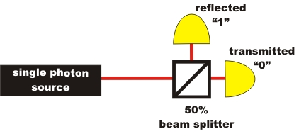

Randomness in the quantum world
Overview
The random process is a unique feature of quantum physics. Quantum randomness was known to Albert Einstein as early as 1926 from theoretical deliberations. He did, however, have his doubts about absolute randomness, as is obvious in his often-cited words: "I, at any rate, am convinced that he does not throw dice" [Ein26]. In the experiment "Existence of the photon"' it was shown that a single photon is either reflected or transmitted at the beam splitter, and is never actually split. Which way the individual photon takes cannot be predicted. The quantum randomness generator therefore is an application of the basic experiment on the existence of the photon from the sector of quantum information. On the subsequent pages, the following means of access to and applications for the quantum randomness generator can be found:

Quantum random generator with single photons